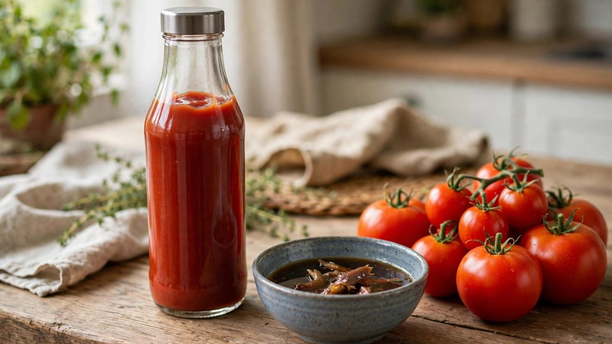

केचप बिना टमाटर वाली किण्वित मछली सॉस के रूप में शुरू हुआ
फ्राइज पर डाली जाने वाली लाल सॉस के-त्सिआप के रूप में शुरू हुई, जो दक्षिणी चीन और दक्षिण पूर्व एशिया की गहरी किण्वित मछली सॉस थी। टमाटर 1812 तक इस विधि में नहीं आया।

मुख्य बिंदु
- पहले केचप में कोई टमाटर नहीं था, कोई चीनी नहीं थी, और कुछ भी लाल नहीं था। यह एक गहरी, नमकीन, किण्वित मछली सॉस थी, जो लंबी समुद्री यात्राओं में टिकने और फीके जहाज के खाने को स्वाद देने के लिए बनाई…
- इसका नाम कहानी बताता है। दक्षिणी चीन और दक्षिण पूर्व एशिया के व्यापारी के-त्सिआप या को-चिअप नाम की सॉस बेचते थे, जो किण्वित मछली से बनती थी। ब्रिटिश नाविकों ने 1600 और 1700 के दशकों में यह सॉस…
- ब्रिटेन लौटकर रसोइयों ने अपने पास मौजूद चीजों से आयातित सॉस की नकल करने की कोशिश की। उन्होंने मशरूम, अखरोट, सीप और एंकोवी का उपयोग किया। लंबे समय तक केचप शब्द का अर्थ लगभग कोई भी गहरी, नमकीन,…
पहले केचप में कोई टमाटर नहीं था, कोई चीनी नहीं थी, और कुछ भी लाल नहीं था। यह एक गहरी, नमकीन, किण्वित मछली सॉस थी, जो लंबी समुद्री यात्राओं में टिकने और फीके जहाज के खाने को स्वाद देने के लिए बनाई गई थी।
इसका नाम कहानी बताता है। दक्षिणी चीन और दक्षिण पूर्व एशिया के व्यापारी के-त्सिआप या को-चिअप नाम की सॉस बेचते थे, जो किण्वित मछली से बनती थी। ब्रिटिश नाविकों ने 1600 और 1700 के दशकों में यह सॉस चखी, इसका गहरा नमकीन स्वाद पसंद किया, और इसे घर ले गए।
एक नाम, कई सॉस
ब्रिटेन लौटकर रसोइयों ने अपने पास मौजूद चीजों से आयातित सॉस की नकल करने की कोशिश की। उन्होंने मशरूम, अखरोट, सीप और एंकोवी का उपयोग किया। लंबे समय तक केचप शब्द का अर्थ लगभग कोई भी गहरी, नमकीन, बोतलबंद सॉस था, कोई एक तय विधि नहीं। मशरूम केचप रसोई की आम चीज थी, और 1800 के शुरुआती दौर की पाक पुस्तकों में कई तरह के केचप साथ-साथ मिलते थे।
जिस स्वाद का वे पीछा कर रहे थे, उसका आज एक नाम है: उमामी। किण्वित मछली में ग्लूटामिक एसिड भरपूर होता है, वही यौगिक जो उस नमकीन गहराई के पीछे है। इसलिए इतने विकल्प काम कर गए। मशरूम और एंकोवी में अपने नमकीन यौगिक होते हैं, इसलिए दक्षिण पूर्व एशिया से दूर का रसोइया भी मूल स्वाद के करीब पहुंच सकता था।
टमाटर देर से आया
टमाटर अमेरिका से यूरोप आया, और कई लोगों ने लंबे समय तक इसे संदेह से देखा। यह 1800 के दशक में ही केचप से जुड़ा। 1812 में फिलाडेल्फिया के चिकित्सक जेम्स मीस ने टमाटर के गूदे, मसालों और ब्रांडी का उपयोग करके पहली ज्ञात टमाटर केचप विधि प्रकाशित की। 1817 के एक शुरुआती ब्रिटिश टमाटर संस्करण में अब भी टमाटर को एंकोवी और छोटे प्याज के साथ मिलाया गया था, जो मछली सॉस के अतीत और टमाटर के भविष्य के बीच एक साफ पुल था।
टमाटर एक रासायनिक कारण से इस काम में फिट बैठा। इसमें ग्लूटामेट भरपूर होता है, यौगिकों का वही परिवार जिसने मछली सॉस को इतना गहरा स्वाद दिया था। नई सॉस ने पुरानी की नमकीन ताकत बनाए रखी और लाल, गाढ़ी और मीठी-खट्टी हो गई।
बोतलों ने इसे अमेरिकी बनाया
टमाटर केचप बोतलों में जाने के बाद बड़े पैमाने का उत्पाद बन गया। हेनरी जे. हाइन्ज ने 1876 में अपना संस्करण बेचना शुरू किया, और उनकी कंपनी ने बाद में रासायनिक परिरक्षकों के बजाय पके टमाटरों और अधिक सिरके पर आधारित विधि को आगे बढ़ाया। टिकाऊ बोतलों ने सॉस के बदलते परिवार को एक मानक लाल सॉस में बदल दिया, और वह सॉस बर्गर और फ्राइज के साथ दुनिया भर में फैल गई।
इसलिए फ्रिज में रखी बोतल एक परतदार आविष्कार है। नाम और नमकीन विचार एशिया की किण्वित मछली सॉस से आया। नकलें ब्रिटिश रसोइयों से आईं। टमाटर, बोतल और मानक विधि संयुक्त राज्य अमेरिका से आई। हर निचोड़ में तीनों पड़ाव हैं।
स्रोत
स्मिथसोनियन पत्रिका ने केचप को किण्वित मछली सॉस से बोतलबंद टमाटर मानक तक खोजा, और TASTE द्वारा सारांशित नेशनल ज्योग्राफिक रिपोर्टिंग 1812 की टमाटर विधि और 1876 की हाइन्ज बोतलिंग दर्ज करती है।